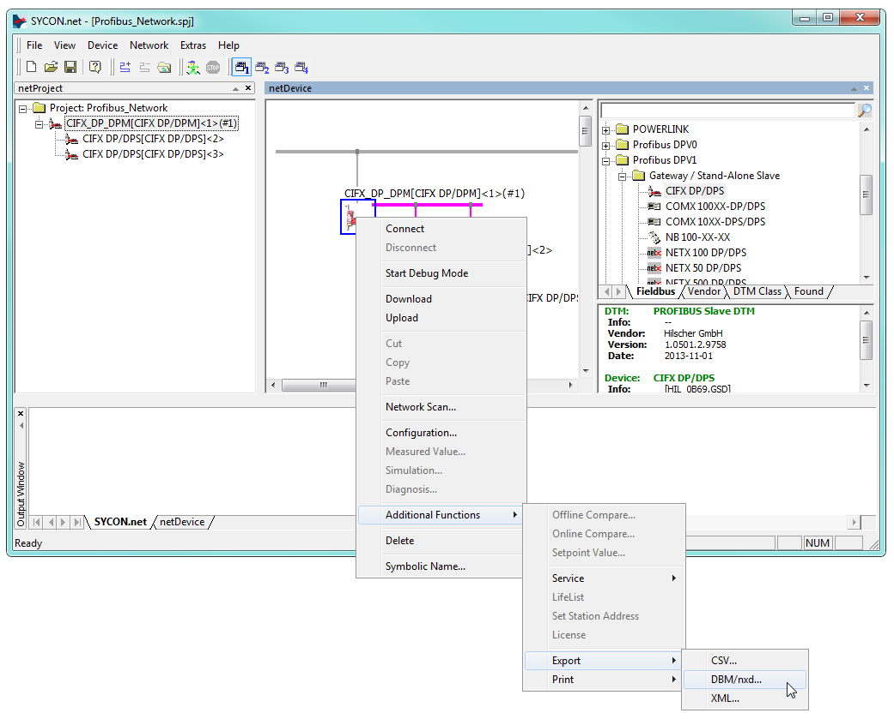

IO641 Usage Notes
IO641 Usage Notes — Usage information about the I/O module
I/O Module configuration with SYCON.net
During initialization of the real-time application, the IO641 Setup block reads a configuration file from the hard drive of the target machine and configures the PROFIBUS DP protocol stack. Use the SYCON.net configuration tool to create such a file.
![[Tip]](images/tip.png) | Tip |
|---|---|
Download the SYCON.net configuration tool from the Speedgoat Customer Portal. Login to your Speedgoat account. In the Downloads section, navigate to Software and click SYCON.net (v1.500 Build 231214). |
In addition to this short introduction, please read the SYCON.net help documentation for detailed information about how to set up a PROFIBUS DP network and export the module configuration file.
Once all the slaves are configured, right-click on the master icon and select Additional Functions, Export, DBM/nxd

Select a name for the file, e.g.: my_master.nxd. Save the file in your current MATLAB workspace or at any location of your choice.
Enter the path to the file in the Configuration File parameter of the Setup block. Specify the input and output port lengths in the Send and Receive blocks according to the configuration defined in SYCON.net.


LED Status Description
LED Color State Meaning SYS Green On Operating system running Green/Yellow Blinking Second stage bootloader is waiting for firmware Yellow On Bootloader netX (= romloader) is waiting for second stage bootloader Off Off Power supply for the device is missing or hardware defect COM Green On Communication to all Slaves is established Green Flashing (5 Hz) PROFIBUS is configured, but bus communication is not yet released from the application Green Flashing acyclic No configuration or faulty configuration Red Flashing (5 Hz) Communication to at least one Slave is disconnected Red On Communication to all Slaves is disconnected or another serious error has occurred. Redundant Mode: The active Master was not found Off Off Device is not switched on or network power is missing
LED Color State Meaning STATUS/COM1 Green On Communication to all Slaves is established Green Flashing (5 Hz) PROFIBUS is configured, but bus communication is not yet released from the application Green Flashing acyclic No configuration or faulty configuration Off Off LED ERROR is off: Device is not switched on or network power is missing
LED ERROR is flashing or “on”: Refer to description LED ERROR
ERROR/COM2 Off Off Refer to description for LED STATUS Red Flashing (5 Hz) Communication to at least one Slave is disconnected Red On Communication to all Slaves is disconnected or another serious error has occurred. Redundant Mode: The active Master was not found
Status Codes
For the list of status codes, please refer to Status Codes for Protocols Supported with the IO64x/IO75x Modules.